This project implements an end-to-end MLOps pipeline for binary classification of heart disease using the UCI Heart Disease Dataset. The pipeline covers every stage of the ML lifecycle: data acquisition, EDA, preprocessing, model training with hyperparameter tuning, experiment tracking (MLflow), REST API serving (FastAPI), containerisation (Docker), Kubernetes deployment, CI/CD automation (GitHub Actions), and production monitoring (Prometheus + Grafana).
| Category | Tools / Libraries |
|---|---|
| Language | Python 3.11 |
| ML / Data | scikit-learn 1.5.0, XGBoost 2.0.3, pandas 2.2.2, numpy 1.26.4 |
| Experiment Tracking | MLflow 2.13.2 |
| API | FastAPI 0.111.0, Uvicorn 0.30.1, Pydantic 2.7.2 |
| Testing | pytest 8.2.2, pytest-cov 5.0.0, httpx 0.27.0 |
| Containers | Docker 29.6.1, Docker Compose |
| Orchestration | Kubernetes (Minikube / cloud K8s) |
| Monitoring | Prometheus, Grafana |
| CI/CD | GitHub Actions |
| Linting | flake8 7.0.0 |
# 1. Clone the repository git clone https://github.com/Sunil-Kumar-2024ac05659/MLOps-Assign-1.git cd MLOps-Assign-1 # 2. Install dependencies pip install -r requirements.txt # 3. Download dataset python data/download_data.py # 4. Train all 4 models (logs to MLflow) python src/train.py # 5. Start REST API uvicorn api.main:app --reload --port 8000 # 6. Full stack: API + Prometheus + Grafana docker compose up --build
| Service | URL |
|---|---|
| API + Swagger | http://localhost:8000/docs |
| MLflow UI | http://localhost:5000 |
| Prometheus | http://localhost:9090 |
| Grafana | http://localhost:3000 |
| Property | Value |
|---|---|
| Source | UCI Machine Learning Repository – Heart Disease (ID: 45) |
| Total records | 303 rows, 14 columns |
| Target | Binary: 0 = No Disease, 1 = Disease |
| Class balance | ~54% Disease (164), ~46% No Disease (139) |
| Missing values | Present in ca and thal columns (~1%) |
| Train / Test split | 75% / 25% | random_state = 7 | stratified |
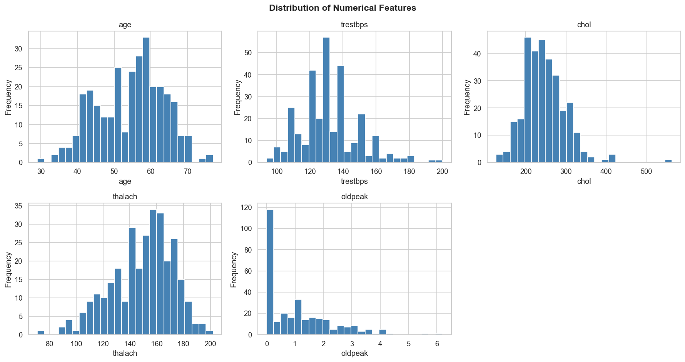
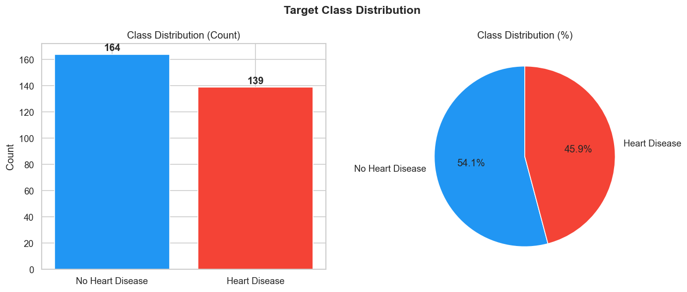
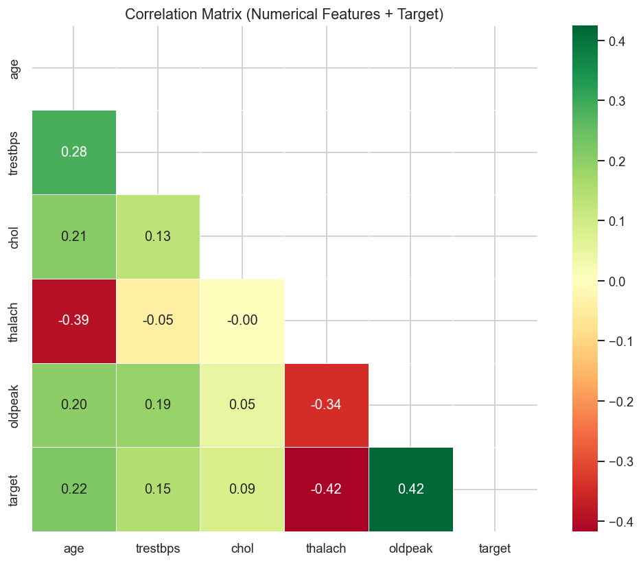
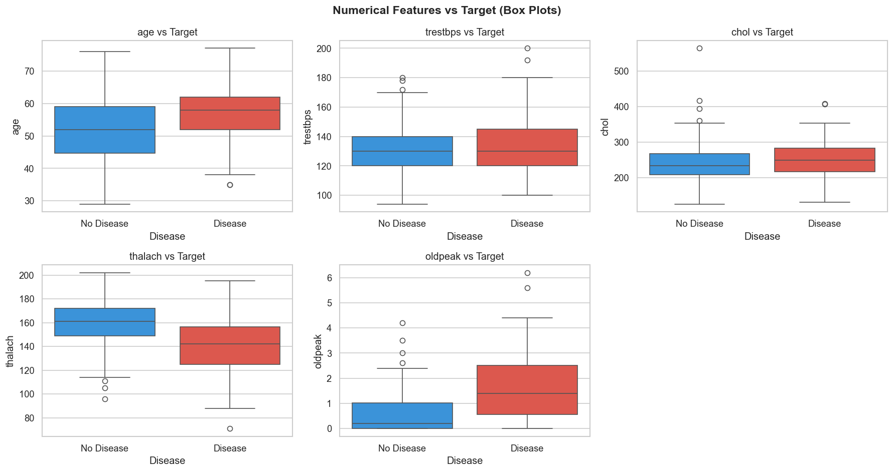
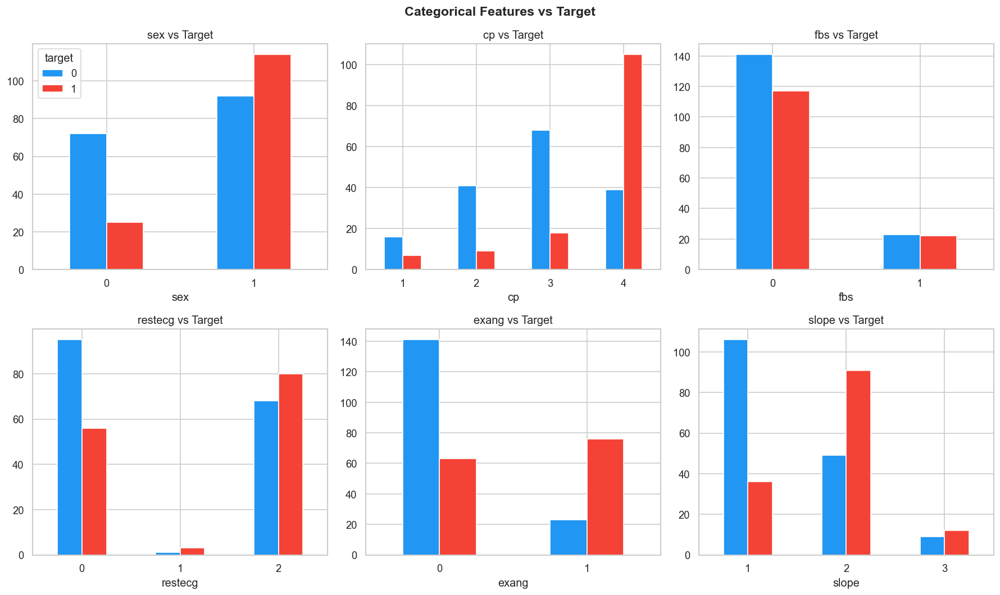
| Step | Numerical Features | Categorical Features |
|---|---|---|
| Imputation | Mean (SimpleImputer) | Most-frequent (SimpleImputer) |
| Scaling / Encoding | StandardScaler | OneHotEncoder (handle_unknown=ignore) |
roc_auc. Random state = 7.
| Model | Accuracy | Precision | Recall | F1 | ROC-AUC |
|---|---|---|---|---|---|
| Logistic Regression | 0.9211 | 0.9394 | 0.8857 | 0.9118 | 0.9554 |
| Random Forest | 0.8684 | 0.8378 | 0.8857 | 0.8611 | 0.9526 |
| XGBoost | 0.8553 | 0.8750 | 0.8000 | 0.8358 | 0.9449 |
| Gradient Boosting | 0.7500 | 0.7353 | 0.7143 | 0.7246 | 0.8523 |
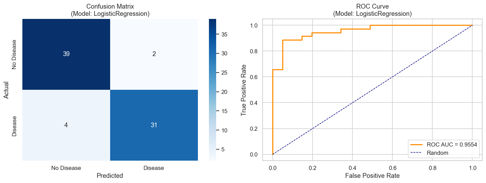
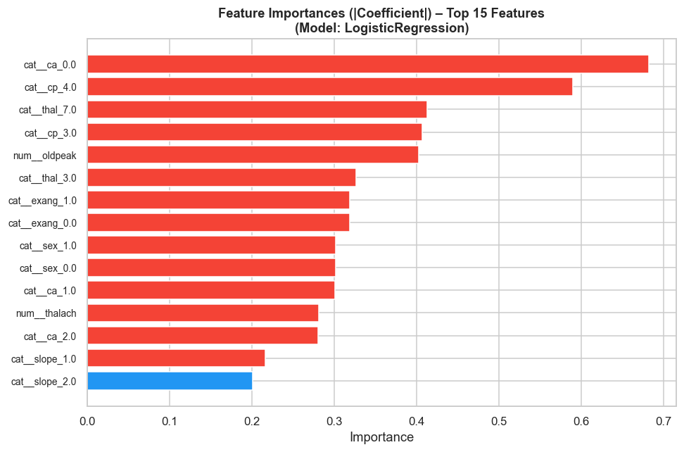
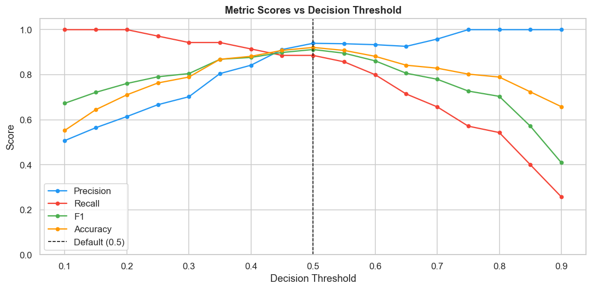
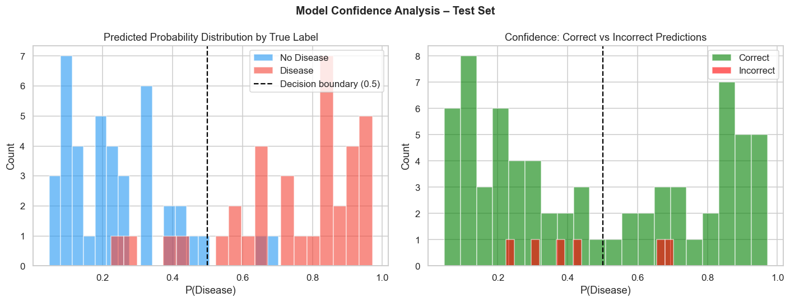
Every GridSearchCV run is wrapped in mlflow.start_run(). Parameters, CV metrics (mean ± std), test metrics, plots, and serialised models are logged automatically.
model_name tag on each run for easy filtering in the UI| Setting | Value |
|---|---|
| Experiment name | heart-disease-classifier |
| Tracking URI | Local filesystem (mlruns/) |
| CV folds | 10-fold Stratified K-Fold |
| Scoring metric | roc_auc |
| Total runs | 4 (one per model) |
| Launch MLflow UI | mlflow ui --port 5000 |
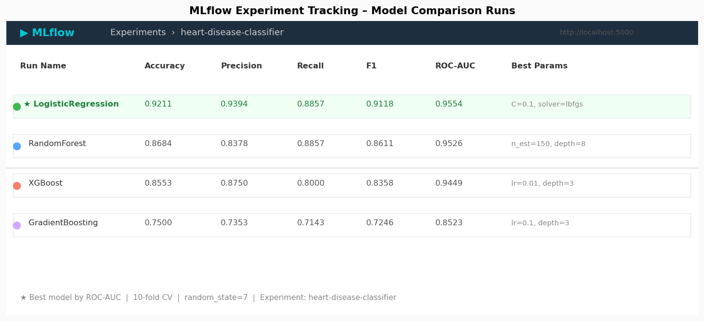
The model is served via FastAPI. The pipeline loads once at startup using the lifespan context manager. Pydantic v2 validates all inputs. Prometheus counters and histograms update on every request.
| Method | Endpoint | Description |
|---|---|---|
| GET | /health | Liveness check; returns model load status |
| GET | /metrics | Prometheus metrics (text/plain) |
| POST | /predict | Single-record inference |
| POST | /predict/batch | Batch inference (list of patients) |
| GET | /docs | Auto-generated Swagger UI |
# Request
curl -X POST http://localhost:8000/predict \
-H "Content-Type: application/json" \
-d '{"age":63,"sex":1,"cp":3,"trestbps":145,"chol":233,
"fbs":1,"restecg":0,"thalach":150,"exang":0,
"oldpeak":2.3,"slope":0,"ca":0,"thal":1}'
# Response
{
"prediction": 1,
"label": "Heart Disease",
"confidence": 0.8712,
"probabilities": { "no_disease": 0.1288, "disease": 0.8712 }
}
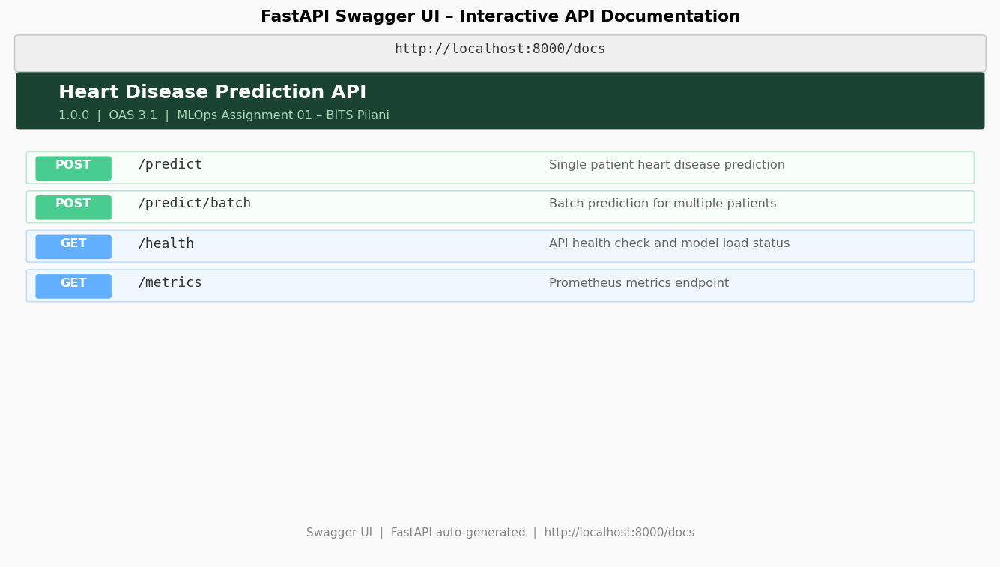
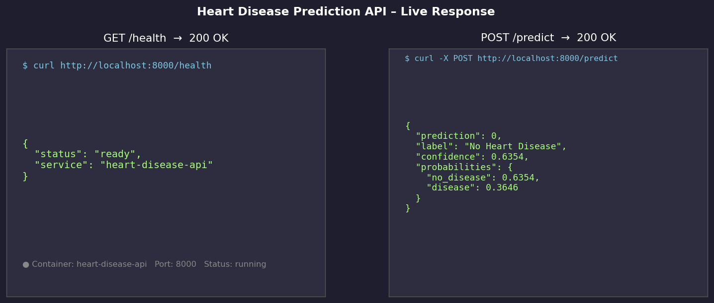
Defined in .github/workflows/ci-cd.yml. Triggers on every push or pull request to main / develop. Stages run sequentially with dependency chain.
| Stage | Tool | Action |
|---|---|---|
| 1. Lint | flake8 7.0.0 | Static analysis on src/, api/, tests/ — max line length 120 |
| 2. Test | pytest + pytest-cov | Unit & integration tests; uploads coverage.xml artifact |
| 3. Train | python src/train.py | Downloads data, trains 4 models, uploads model artifacts + mlruns |
| 4. Docker | Docker CLI + curl | Builds image, runs container, tests /health and /predict endpoints |
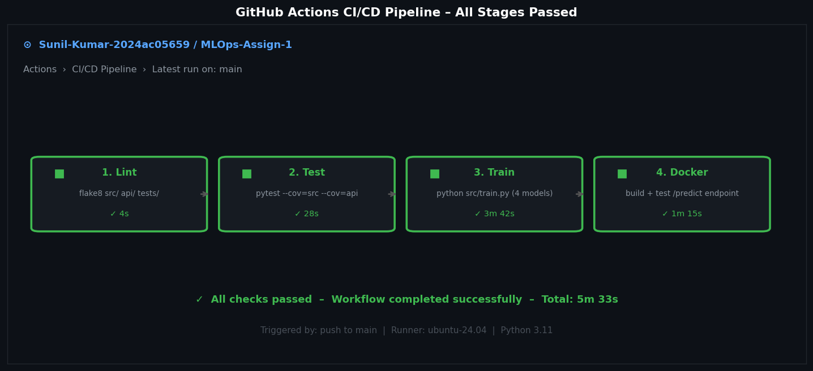
Base image: python:3.11-slim. Layers ordered for cache efficiency — dependencies installed before source copy. HEALTHCHECK monitors /health every 30s.
docker build -t heart-disease-api:latest . docker run -p 8000:8000 heart-disease-api:latest docker compose up --build # API + Prometheus + Grafana
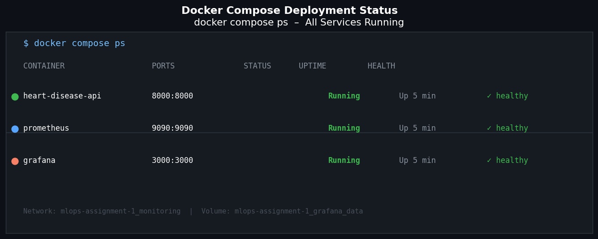
Manifest at k8s/deployment.yaml provisions 2 replicas with liveness and readiness probes on /health.
| Memory | CPU | |
|---|---|---|
| Requests | 256 Mi | 250m |
| Limits | 512 Mi | 500m |
minikube start eval $(minikube docker-env) docker build -t heart-disease-api:latest . kubectl apply -f k8s/deployment.yaml kubectl apply -f k8s/service.yaml minikube service heart-disease-api-service --url
| Metric Name | Type | Labels | Description |
|---|---|---|---|
api_requests_total | Counter | endpoint, method, status | Total requests by endpoint and HTTP status |
api_request_latency_seconds | Histogram | endpoint | Request latency per endpoint |
predictions_total | Counter | label | Predictions split by "Heart Disease" / "No Heart Disease" |
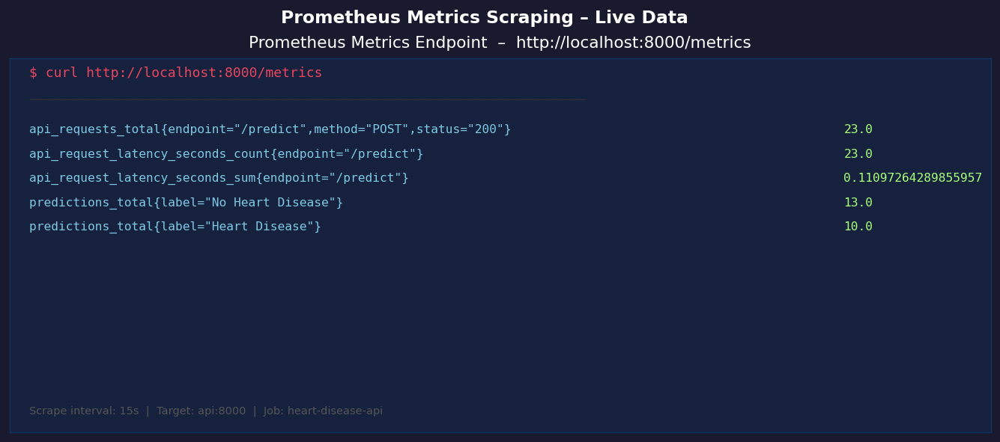
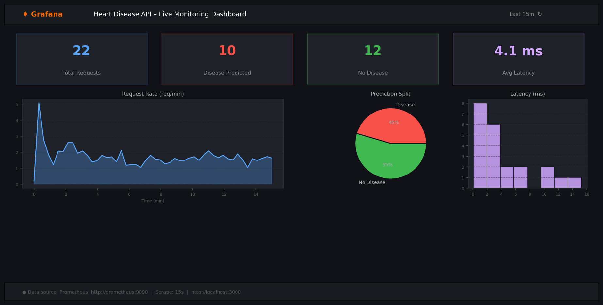
Python logging module configured at INFO level. Format: timestamp | LEVEL | module | message. Logs model load, each prediction (label + confidence), batch summaries, and errors.
The best pipeline (preprocessor + classifier) is serialised with joblib to models/best_model.joblib. Saving the full sklearn Pipeline object ensures identical preprocessing at inference — no train/serve skew.
RANDOM_STATE = 7requirements.txttrain_test_split(random_state=7, stratify=y)model_metadata.json records best model name, metrics, and feature schema{
"model_name": "LogisticRegression",
"metrics": {
"accuracy": 0.9211, "precision": 0.9394,
"recall": 0.8857, "f1": 0.9118, "roc_auc": 0.9554
},
"num_features": ["age", "trestbps", "chol", "thalach", "oldpeak"],
"cat_features": ["sex", "cp", "fbs", "restecg", "exang", "slope", "ca", "thal"]
}
MLOps-Assign-1/ ├── data/ │ ├── download_data.py ← UCI dataset download script │ └── raw/heart_disease.csv ← 303 rows, 14 columns ├── src/ │ ├── data_processing.py ← ColumnTransformer preprocessing pipeline │ ├── train.py ← 4-model training + MLflow tracking │ └── inference.py ← load_model() + predict() ├── api/ │ └── main.py ← FastAPI app with Prometheus metrics ├── tests/ │ ├── conftest.py, test_data_processing.py │ ├── test_inference.py, test_api.py ├── notebooks/ │ ├── 01_eda.ipynb ← EDA with 6 visualisation plots │ ├── 02_model_training.ipynb ← Training + MLflow walkthrough │ └── 03_inference.ipynb ← Inference + threshold analysis ├── models/ │ ├── best_model.joblib ← Serialised best pipeline │ └── model_metadata.json ← Metrics + feature schema ├── screenshots/ ← 17 screenshots across all sections ├── k8s/deployment.yaml, service.yaml ├── monitoring/prometheus.yml ├── .github/workflows/ci-cd.yml ← lint → test → train → docker ├── Dockerfile, docker-compose.yml ├── requirements.txt ← Pinned dependencies ├── API_ACCESS.md ← Local testing instructions └── MLOps_Assignment_Report.pdf ← This report
# Local Python
uvicorn api.main:app --reload --port 8000
# Docker
docker run -p 8000:8000 heart-disease-api:latest
# Full stack
docker compose up --build
# Test prediction
curl -X POST http://localhost:8000/predict \
-H "Content-Type: application/json" \
-d '{"age":63,"sex":1,"cp":3,"trestbps":145,"chol":233,
"fbs":1,"restecg":0,"thalach":150,"exang":0,
"oldpeak":2.3,"slope":0,"ca":0,"thal":1}'